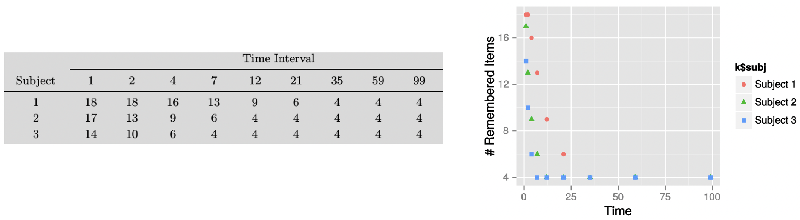

> lookup(dnorm)
StanFunction Arguments ReturnType
415 normal_id_glm_lpdf (real, matrix, real, vector, T);(vector, row_vector, vector, vector, vector) T;real
418 normal_log (real, real, T);(vector, vector, vector) T;real
419 normal_lpdf (real, real, T);(vector, vector, vector) T;real
553 std_normal_lpdf (T);(vector) T;realDebugging in Stan
Understanding common errors and warnings and how to fix/avoid them
As you’ve likely discovered throughout this course, programming in Stan differs significantly from languages like R or Python. Unlike these languages where we can execute and test code line by line, Stan requires us to write and compile the entire model before we can run it. Therefore, when errors occur, we need to revisit the model code, make corrections, and recompile - making the debugging process more time-consuming and challenging.
Therefore it is important to develop good practices for writing and debugging Stan code to minimize errors and streamline the troubleshooting process.
Best practices and common errors in Stan
We can roughly divide best practices in Stan into three areas: coding reproducibility, running simulations, and code/model design.
Reproducibility
Just as with any programming language, writing reproducible code should be a top priority. Your code should be clear and understandable not only to you right now, but also to your future self and to others who might need to use or modify it. When writing Stan code, ask yourself: “Would someone who has never seen this code before understand what’s happening?”
Here are some essential practices for maintaining reproducibility:
1. Use meaningful comments throughout your code. Comments in Stan use the same syntax as in C++ (// for single-line comments, /* */ for multi-line comments). They should explain the purpose of different model components, any assumptions being made, and the reasoning behind specific parameter constraints or priors.
2. Set and save your random number generator seed. While this ensures reproducibility on your specific platform, keep in mind that results might still vary across different platforms or Stan versions.
3. Use clear, descriptive variable names. Instead of generic names like x or y, use names that reflect what the variables represent. For instance, in a reinforcement learning model, instead of a for learning rate, use alpha or learning_rate. This makes your code self-documenting and easier to understand.
Running simulations
One of the most powerful aspects of statistical modeling is that our models are generative - they describe a process by which data could be created. We can leverage this feature when developing Stan code by building our model first, using it to simulate data with known parameters and then fitting the model to this simulated data to verify it recovers the true parameters.
This approach allows us to validate our model implementation even before data collection. If our model can’t recover known parameters from simulated data, it definitely won’t work properly with real data!
Design Top-Down, code Bottom-Up
When developing complex models, it’s tempting to implement everything at once. However, a more effective approach is to start simple and gradually add complexity. Let’s take reinforcement learning models as an example where one could:
Start with a basic reinforcement learning model (e.g., simple RW model with a single learning rate)
Verify it works correctly
Add complexity one layer at a time (e.g., separate learning rates for positive/negative feedback)
Test each new addition before moving on
This incremental approach makes debugging much more manageable. If you add a new component and suddenly encounter errors, you know exactly which addition caused the problem. In contrast, if you implement a complex hierarchical reinforcement learning model all at once and encounter errors, it can be much harder to pinpoint the source of the problem.
Common errors and warnings in Stan
Below is a summary of some common errors and warnings that you may encounter when writing Stan models:
| Error Type | Warning Type |
|---|---|
| Forget “;” | Forget last blank line |
| Mis-indexing | Use earlier version of Stan |
| Support mismatch | Numerical problems |
| Improper constrain | Divergent transitions |
| Improper dimension declaration | Hit max_treedepth |
| Vectorizing when not supported | BFMI too low |
| Wrong data type | Improper prior |
| Wrong distribution names | |
| Forget priors | |
| Misspelling |
Here are some examples of more common errors and warnings:
Errors
1. Forgetting a semi-colon
// Wrong
parameters {
real alpha
real beta
}
// Correct
parameters {
real alpha;
real beta;
}2. Mis-indexing (remember that Stan uses 1-based indexing)
// Wrong
for (i in 0:N) { // starts at 0
y[i] = x[i];
}
// Correct
for (i in 1:N) { // starts at 1
y[i] = x[i];
}3. Support mismatch
// Wrong
vector[3] x;
vector[2] y;
real z = x * y; // dimension mismatch
// Correct
vector[3] x;
vector[3] y;
real z = dot_product(x, y);4. Improper constraint
// Wrong
parameters {
real sigma; // variance parameter unconstrained
}
// Correct
parameters {
real<lower=0> sigma; // variance must be positive
}5. Improper dimension declaration
// Wrong
parameters {
vector[N] beta; // N not declared in data block
}
// Correct
data {
int<lower=0> N;
}
parameters {
vector[N] beta;
}6. Wrong data type
// Wrong
data {
real trials; // count data should be integer
}
// Correct
data {
int<lower=0> trials;
}7. Wrong distribution names
// Wrong
target += Normal_lpdf(y | mu, sigma); // capitalized
target += bernoulli(y | theta); // missing _lpmf
// Correct
target += normal_lpdf(y | mu, sigma);
target += bernoulli_lpmf(y | theta);8. Forgetting to specify priors
// Wrong
parameters {
real beta;
}
model {
// no prior specified
y ~ normal(beta * x, sigma);
}
// Correct
parameters {
real beta;
}
model {
beta ~ normal(0, 1); // prior specified
y ~ normal(beta * x, sigma);
}
Implicit priors
Recall that Stan also implicitly assigns uniform priors to parameters within their constraints. For unconstrained parameters (declared as real), this means an improper uniform prior over \([-∞, ∞]\). For bounded parameters (e.g., real<lower=0> or real<lower=0, upper=1>), Stan assigns a uniform prior over the constrained range. While this allows the model to run, it’s generally better practice to explicitly specify your priors.
Warnings
Here are some common warnings in Stan:
1. Numerical problems (Stan cannot handle certain mathematically undefined operations, such as division by zero or taking the log of zero. These will cause your model to fail)
// Potentially problematic
target += log(x); // dangerous if x can be very close to 0
// Better
target += log1p(x - 1); // more stable for x close to 12. Divergent transitions (often due to poor parameterization)
// Potentially problematic
parameters {
real<lower=0> sigma;
}
// Better (non-centered parameterization)
parameters {
real sigma_raw;
}
transformed parameters {
real<lower=0> sigma = exp(sigma_raw);
}3. Improper prior (try to avoid overly diffuse priors)
// Poor choice
beta ~ normal(0, 1000); // too diffuse
// Better choice
beta ~ normal(0, 5); // more reasonable scaleFrom the above examples, three common warnings might appear after running your R script: divergent transitions, hitting maximum tree depth, and low BFMI (Bayesian Fraction of Missing Information), all indicating potential problems with sampling efficiency. These warnings don’t necessarily mean your model is incorrect, but rather that Stan is having difficulty efficiently exploring the posterior distribution.
When you encounter these warnings, your first step should be to go back to your model and try to optimize it i.e., by reparameterizing with more efficient parameter scales or improving prior choices.
If you’ve made changes to optimize the model but still see these warnings, you can try to adjust Stan’s sampling parameters: ::: {.cell}
# Example of adjusting sampling parameters in R
fit <- stan(
file = "model.stan",
iter = 5000, # Increase number of iterations
chains = 8, # Increase number of chains
control = list(
adapt_delta = 0.95, # Increase adapt_delta (default is 0.8)
max_treedepth = 15, # Adjust max_treedepth if needed
stepsize = 0.5 # Decrease stepsize
)
):::
Remember that while adjusting these parameters might help, they’re not a substitute for good model design. The priority is to first optimize your model, then fine-tune sampling parameters if necessary.
Getting help
Encountering warnings in Stan and knowing how to solve them may be tricky, especially so for new users. You can always refer to the Stan User Guide’s page on Errors and Warnings, the Stan Development Team’s page on Runtime warnings and convergence problems or post your problem on the Stan Discourse.
Debugging in Stan
Here are some key practices for debugging Stan models:
1. Always use the .stan extension for writing your Stan models
Whilst we have exclusively written our Stan models in a .stan file, which we then load into the R script, an alternative is to include the Stan model in the R script directly:
stan_code <- "
data {
int<lower=0> N;
vector[N] y;
}
parameters {
real mu;
real<lower=0> sigma;
}
model {
y ~ normal(mu, sigma);
}
"
fit <- stan(model_code = stan_code, data = data_list)While this approach can work for very simple models, it becomes unwieldy for more complex models as several features present when writing .stan files are lost, including editor support (see below), syntax highlighting and version control.
2. Use RStudio’s ‘Check’ button to catch basic syntax errors before attempting to compile.
If the model is coded correctly in the .stan file, you will get something like the message below after pressing the Check button:
> rstan:::rstudio_stanc("~/Documents/GitHub/other/BayesCog/workshops/07.optm_rl/_scripts/funnel.stan")
~/Documents/GitHub/other/BayesCog/workshops/07.optm_rl/_scripts/funnel.stan is syntactically correct.On the other hand, if there are syntax-related or other errors, these will be printed to the terminal (see the example section below).
3. Use the lookup() function
The lookup() function in R is useful for checking important information about Stan functions:
The lookup for dnorm shows several normal distribution-related functions in Stan, and helps us understand the correct function to use in our Stan code. For example, it tells us that we should use normal_lpdf() rather than normal_log() for probability density calculations, and each function shows its expected argument types and return value.
4. Be careful with copying/pasting
When copying code between blocks, be mindful of variable names and syntax differences. For example, we have previously copy-pasted code from the model block to the generated quatities block to calculate the log-likelihood for our RL model.
5. Run minimal tests first
When sampling, you can initially start with minimal sampling parameters, as a ‘proof-of-principle’ approach that is less time and computationally burdening:
fit <- stan(
file = "model.stan",
chains = 1,
iter = 1
)If this runs without errors, then your model should work with the full sampling parameters. You can create a test mode in your analysis script to initially run models using these settings:
test_mode <- TRUE
if(test_mode) {
chains <- 1
iter <- 1
} else {
chains <- 4
iter <- 2000
}6. Debugging by printing
Similar to Python, Stan’s print statement can help track model execution. In the reinforcement learning model below:
for (s in 1:1) {
vector[2] v;
real pe;
v <- initv;
for (t in 1:nTrials) {
choice[s,t] ~ categorical_logit(tau[s] * v);
print("s = ", s, ", t = ", t, ", v = ", v);
pe <- reward[s,t] - v[choice[s,t]];
v[choice[s,t]] <- v[choice[s,t]] + lr[s] * pe;
}
}The line print("s = ", s, ", t = ", t, ", v = ", v); above prints the subject (s), trial (t), and value (v) at each iteration, helping to identify where problems might occur in your model execution.
An example of debugging in Stan: the memory retention model
Let’s practically explore debugging techniques through a example model involving memory retention1. The data shown below is for a hypothetical memory experiment where three subjects were tested on their ability to remember 18 items across different time intervals (1, 2, 4, 7, 12, 21, 35, 59, and 99 time units).

Data from the experiment (left) and the number of remembered items plotted against time (right)
Looking at the plot, we can see that the pattern for recall strongly suggests an exponential decay in memory retention.
To model this pattern, we’ll use a simplified version of the exponential decay model. The model assumes that the probability of remembering an item after time \(t\) is given by:
\[θt = min(1.0, exp(-αt) + β)\]
This captures several key aspects of memory retention:
The \(α\) parameter represents the decay rate - how quickly memories fade over time, where larger values of \(α\) indicate faster forgetting.
The \(β\) parameter represents a baseline level of remembering - the asymptotic level of performance that remains even after very long delays. This captures the intuition that some memories persist indefinitely.
The \(min(1.0, ...)\) ensures that the probability never exceeds 1, which would be mathematically impossible.
When modeling this practically, we can use a binomial distribution, because at each time point, we’re essentially dealing with a series of yes/no outcomes (remembered vs. not remembered) across multiple items. Each item has the same probability \(θt\) of being remembered at time \(t\), and the trials are independent of each other.
The number of successes (items remembered) out of \(n\) trials (total items) therefore follows a binomial distribution.
Exercise 15
The Stan model exp_decay_model.stan has been coded for you, but with several errors, meaning that the code will not run.
1. Examine the Stan model code. How many problems can you see? (There are 9 in total!)
HINT: Press the ‘Check’ button iteratively to see if the Stan model is coded correctly after each fix.
Problems with the Stan model code
The nine problems with the Stan model code (and how to fix them) are provided below:
1. There is a missing semi-colon at line 25
// Problem:
alpha = Phi_approx( alpha_mu_raw + alpha_sd_raw * alpha_raw ) // missing ;
// Solution:
alpha = Phi_approx( alpha_mu_raw + alpha_sd_raw * alpha_raw );2. We cannot give explicit bounds to a variable within the model block in line 30
// Problem:
model {
real<lower=0,upper=1> theta[ns,nt];
// Solution:
model {
real theta[ns,nt];Note that this is a hierarchical model of memory retention. Therefore, when calculating the probability of remembering items (theta) for each subject and time point, we must use alpha[s] and beta[s] to ensure each subject’s data is modeled using their own individual parameters.
To this end, there are two further mistakes on line 45:
3. There is incorrect indexing for alpha[ns] as alpha[ns] means we’re always using the last subject’s alpha value instead of the current subject’s alpha
4. There is incorrect indexing for beta which is not indexed at all, but is a subject-specific parameter
We therefore need to change these to alpha[s] and beta[s].
// Problem:
theta[s,t] = fmin(1.0, exp(-alpha[ns] * intervals[t]) + beta);
// Solution:
theta[s,t] = fmin(1.0, exp(-alpha[s] * intervals[t]) + beta[s]);5. The intervals variable is declared incorrectly
The declaration int<lower=0> intervals defines intervals as a single integer value, when in fact we need to store multiple time points (1, 2, 4, 7, 12, 21, 35, 59, 99) across nt trials.
// Problem:
int<lower=0> intervals;
// Solution:
int<lower=0> intervals[nt]; // storing each trial6. The naming for nItem is not consistent between the data and model block
You can change either, so long as it matches with the naming used for the data in the R script. Since this is nItem we will simply rename the data block instance.
// Problem:
int<lower=0> nitem;
// Solution:
int<lower=0> nItem;7. The sampling statement has incorrect indexing
We need to match each observed count k[s,t] (number of items remembered by subject s at time t) with its corresponding probability theta[s,t], rather than trying to use the entire k matrix with a single probability value.
// Problem:
k ~ binomial(nItem, theta[s,t]);
// Solution:
k[s,t] ~ binomial(nItem, theta[s,t]);8. The parameter type is incorrectly specified
The group-level parameters alpha_mu and beta_mu represent probabilities that can take any value between 0 and 1, so they need to be declared as real rather than int which would only allow values of 0 or 1.
// Problem:
int<lower=0,upper=1> alpha_mu;
int<lower=0,upper=1> beta_mu;
// Solution:
real<lower=0,upper=1> alpha_mu;
real<lower=0,upper=1> beta_mu;9. The standard deviation parameters need proper constraints and priors
The standard deviation parameters (alpha_sd_raw, beta_sd_raw) must be positive, so they need a lower bound of 0. Additionally, we need to specify appropriate priors for these parameters in the model block. A Cauchy(0,3) prior is a good prior as it allows for some heavy tails while still being weakly informative.
// Problem:
real alpha_sd_raw; // unconstrained
real beta_sd_raw; // unconstrained
alpha_mu_raw ~ normal(0,1); // missing sd priors
beta_mu_raw ~ normal(0,1);
// Solution:
real<lower=0> alpha_sd_raw; // must be positive
real<lower=0> beta_sd_raw; // must be positive
alpha_mu_raw ~ normal(0,1);
beta_mu_raw ~ normal(0,1);
alpha_sd_raw ~ cauchy(0,3); // appropriate prior for sd
beta_sd_raw ~ cauchy(0,3);That covers the errors in the Stan model code, meaning that the model should now run. However, if you actually run the model (the correctly formatted Stan code is exp_decay_model_master.stan) using the R script exp_decay_main.R you will see warning messages:
Warning messages:
1: There were 1412 divergent transitions after warmup. See
https://mc-stan.org/misc/warnings.html#divergent-transitions-after-warmup
to find out why this is a problem and how to eliminate them.
2: Examine the pairs() plot to diagnose sampling problemsNow changing some of Stan sampling parameters to optimise sampling can help further!
Footnotes
Lee, M. D., & Wagenmakers, E. J. (2014). Bayesian cognitive modeling: A practical course. Cambridge university press.↩︎